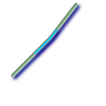

名前
ST_LineSubstring — 次元長に対する割合で示された開始位置と終了位置で切り取られた部分ラインストリングを返します。第2引数と第3引数は、float8で0から1の区間です。
概要
geometry ST_LineSubstring(geometry a_linestring, float8 startfraction, float8 endfraction);
説明
2次元長に対する割合で示された開始位置と終了位置で切り取られた部分ラインストリングを返します。第2引数と第3引数は、float8で0から1の区間です。この関数はLINESTRINGでのみ動作します。MULTILINESTRINGで使用するには、ST_LineMergeと併用します。
startfractionとendfractionが同じ値を持つ場合には、ST_LineInterpolatePointと等価になります。
ポイントに最も近いライン位置の計算についてはST_LineLocatePointを参照して下さい。
![[注記]](images/note.png) | |
1.1.1から、この関数はM軸やZ軸の内挿点も (存在するなら)計算するようになりました。それより前の版では不定値となります。 |
Availability: 1.1.0 Z軸とM軸のサポートが1.1.1で追加されました。
Changed: 2.1.0 2.0.xではST_Line_Substringと呼ばれていました。
 This function supports 3d and will not drop the z-index.
This function supports 3d and will not drop the z-index.
例

1/3の真ん中 (0.333, 0.666)のラインストリング
-- ラインストリングの概ね1/3の真ん中の線を返します
SELECT ST_AsText(ST_Line_SubString(ST_GeomFromText('LINESTRING(25 50, 100 125, 150 190)'), 0.333, 0.666));
st_astext
------------------------------------------------------------------------------------------------
LINESTRING(69.2846934853974 94.2846934853974,100 125,111.700356260683 140.210463138888)
--次に示す例では、PostgreSQLのgenerate_series()を
--使ったwhileループに似たことを行って、
--テーブル内の全てのラインストリングを100単位の
--区分にカットしています。
--単位はSRIDで決まります。
--全てのジオメトリがラインストリングまたは
--隣接するマルチラインストリングで、
--100単位*10000より長いジオメトリが無いと仮定します。
--パフォーマンスを良くするために、10000を減らして、
--期待する最大区分数にあわせることができます。
SELECT field1, field2, ST_LineSubstring(the_geom, 100.00*n/length,
CASE
WHEN 100.00*(n+1) < length THEN 100.00*(n+1)/length
ELSE 1
END) As the_geom
FROM
(SELECT sometable.field1, sometable.field2,
ST_LineMerge(sometable.the_geom) AS the_geom,
ST_Length(sometable.the_geom) As length
FROM sometable
) AS t
CROSS JOIN generate_series(0,10000) AS n
WHERE n*100.00/length < 1;